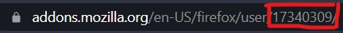
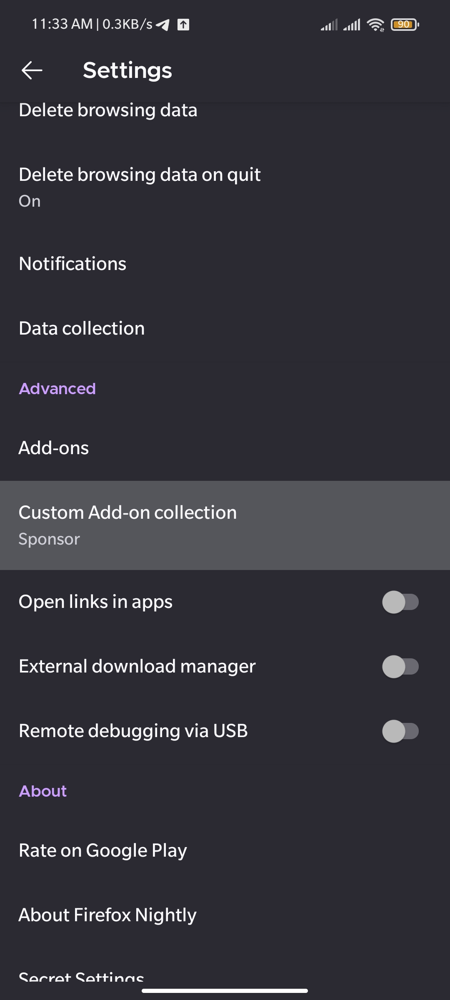
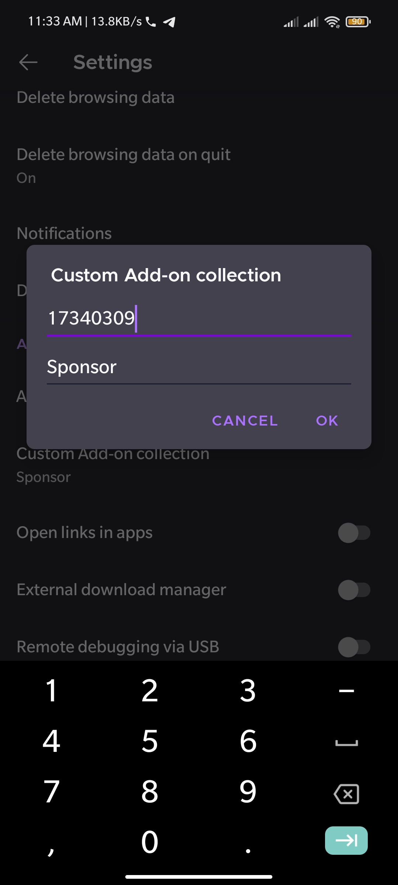
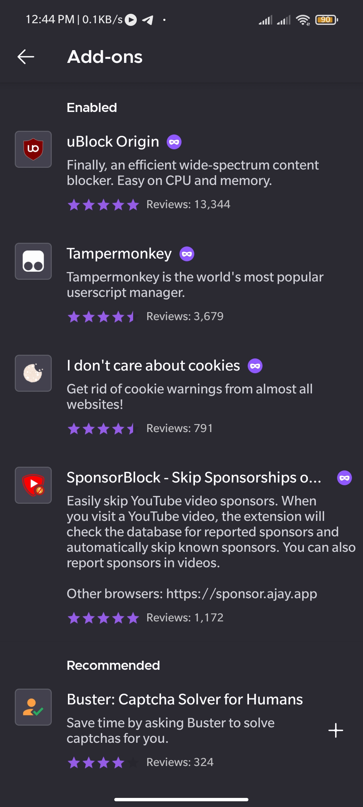
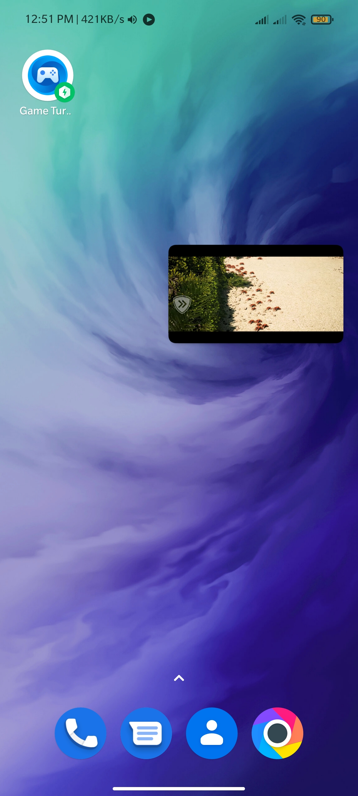
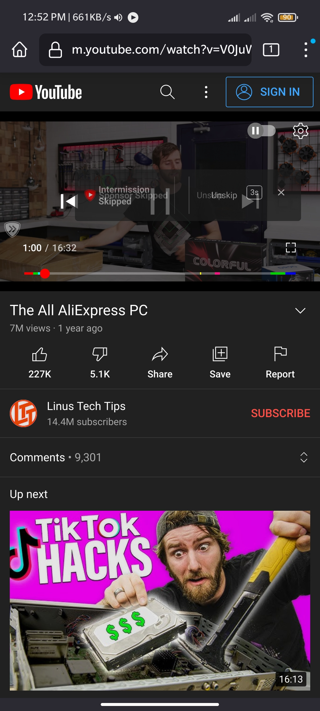

As of now vanced has dropped support and it will break in 2-3 years.
To have similar experience to vanced, you can use youtube on firefox browser android.
TamperMonkey for dislike counter, install the script into tampermonkey from
here
Once you have saved your collection, give it a good name(necessary thing to do)
Now note down your user-id from the address bar(8 digits)

As you have turned on debug mode(from step 2) open up setting scroll to advanced section & click "Custom add-on Collection".


Paste your id & your collection name in next box
Click OK and browser will restart to apply these changes...
Once browser is restarted goto the "Add-on" section and install all the extenstion...

Dont forget to install Return Youtube Dislike script from step 4.c
Now You are good to go!! Sign-in with your google account and enjoy the ad-free experience
PiP Mode

SponsorBlock + Return Youtube Dislike...

You can also add your desired extenstion by just adding those in your collection and just repeat step 7 by just clicking on ok
Sometimes Firefox dosent refresh extenstions thats why...
PS: Some of the extenstion might not be installed and might give you error "Failed to install", we really cannot do anything here.